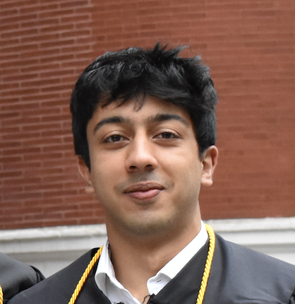

Can It Edit? Evaluating the Ability of Large Language Models to Follow Code Editing Instructions
Federico Cassano, Luisa Li, Akul Sethi, Noah Shinn, Abby Brennan-Jones, Edward Berman, George Chakhnashvili, Anton Lozhkov, Carolyn Anderson, Arjun Guha
paper | code
Lower Bound for Region of Non-Distillable Magic States
Akul Sethi
paper
The Random Purification Channel and Quantum Tomography
Akul Sethi, Scott McCary, and Theo Fairchild-Coppoletti
paper